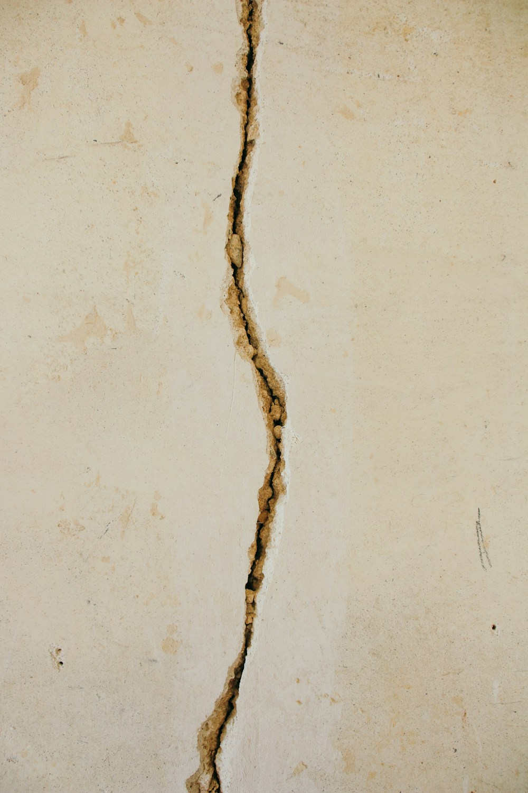

Qu'est-ce qu'un diagnostic sismique ?
Un diagnostic sismique est une étude technique menée par un ingénieur structure qui évalue la vulnérabilité d'un bâtiment existant face aux séismes. Ce n'est pas un simple document administratif : c'est une analyse de la structure qui examine les fondations, les murs porteurs, les planchers et les liaisons entre éléments.
L'objectif est double : identifier les points faibles de la construction, et proposer des mesures de renforcement si nécessaire. La méthode de référence est la partie 3 de l'Eurocode 8 (NF EN 1998-3), consacrée à l'évaluation et au renforcement des bâtiments. Le ministère a publié un guide de diagnostic et de renforcement, qui, comme il le précise lui-même, n'a pas de statut réglementaire ni normatif.
À retenir : le diagnostic sismique n'est pas réservé aux bâtiments anciens. Une construction des années 1990 ou 2000, conçue avec les règles de l'époque, peut ne pas atteindre le niveau de l'Eurocode 8 actuel. Mais ce constat ne crée, à lui seul, aucune obligation de diagnostic ni de mise à niveau.
Existe-t-il une obligation légale de diagnostic ?
Non, pas de manière générale. La réglementation parasismique (Code de l'environnement, articles R563-3 et suivants, et arrêté du 22 octobre 2010) fixe des règles de construction pour les bâtiments neufs et pour certains travaux sur l'existant. Elle n'oblige pas un propriétaire à faire diagnostiquer un bâtiment dans lequel il n'engage pas de travaux.
- Maisons et logements : aucune obligation de diagnostic, quelle que soit la zone, Guadeloupe et Martinique comprises.
- Établissements recevant du public (ERP) et bâtiments publics : aucune obligation générale de diagnostic n'existe non plus dans la réglementation parasismique nationale. Un plan de prévention des risques (PPR) sismique local peut en revanche imposer des mesures : renseignez-vous en mairie.
- Mise à niveau : un bâtiment construit avant l'entrée en vigueur des règles actuelles n'a pas à être mis en conformité avec elles tant qu'on n'y fait pas de travaux.
Les zones sismiques en bref
La France est découpée en cinq zones de sismicité, de 1 (très faible) à 5 (forte). Les règles parasismiques ne concernent que les zones 2 à 5 :
- Zone 1 (très faible) : tout le Tarn, la Guyane — aucune règle parasismique pour les bâtiments courants
- Zone 2 (faible) : La Réunion, la plus grande partie de l'Aveyron
- Zone 3 (modérée) : Mayotte, notamment
- Zone 4 (moyenne) : Nice, Grenoble, Annecy, notamment
- Zone 5 (forte) : Guadeloupe, Martinique et Saint-Martin
Pour connaître la zone exacte de votre commune, consultez notre article sur les zones sismiques en France.

Quand des règles parasismiques s'imposent-elles à un bâtiment existant ?
C'est le projet de travaux qui déclenche les obligations, pas l'existence du bâtiment. L'arrêté du 22 octobre 2010 (article 3) prévoit plusieurs cas, en zones 2 à 5 :
- Travaux importants au-delà de certains seuils : augmentation de surface de plus de 30 % (de plus de 20 % dans certains cas en zones 4 et 5), suppression de plus de 30 % d'un plancher, ou, en zones 4 et 5, suppression de plus de 20 % des éléments de contreventement (les murs et cadres qui reprennent les efforts horizontaux). Les seuils dépendent de la zone et de la catégorie du bâtiment : en zone 2, seuls les bâtiments de catégorie IV sont concernés ; à partir de la zone 3, les maisons individuelles le sont aussi.
- Extension séparée par un joint (joint de fractionnement) : l'extension suit les règles des bâtiments neufs.
- Changement de destination : on retient la catégorie du bâtiment après travaux. Transformer un logement en école, par exemple, peut le faire passer en catégorie supérieure.
- Dans tous les cas, quels que soient les travaux, ils ne doivent pas aggraver la vulnérabilité du bâtiment au séisme. Ouvrir un mur porteur ou alourdir une toiture en zone sismique doit donc être étudié.
Quand l'un de ces cas s'applique, l'Eurocode 8 (avec une accélération de calcul réduite pour l'existant) ou, pour une maison qui entre dans son domaine d'application, le guide CPMI-EC8 fixe le niveau à atteindre. Le diagnostic de l'existant devient alors le point de départ indispensable de l'étude. En dehors de ces cas, le ministère le rappelle : un dimensionnement parasismique n'est pas obligatoire, mais une démarche volontaire de renforcement reste possible, et son niveau relève du choix du maître d'ouvrage.
Et l'attestation parasismique ? Depuis le 1er janvier 2024, des travaux sur un bâtiment existant soumis à permis de construire en zone 3, 4 ou 5 (ou en zone 2 pour les catégories III et IV) donnent lieu à une attestation parasismique. Si les travaux n'imposent aucun calcul parasismique, elle conclut simplement « sans objet ». Ce n'est pas un diagnostic.
Ce qui est souvent pris, à tort, pour une obligation
Le Plan Séisme Antilles
Le Plan Séisme Antilles est un programme public de financement porté par l'État et les collectivités. Il finance le diagnostic puis le confortement ou la reconstruction des bâtiments publics prioritaires : écoles, bâtiments de gestion de crise, hôpitaux, logement social. Il ne crée aucune obligation pour les propriétaires privés.
L'information des acquéreurs et des locataires
En zones 2 à 5, le vendeur ou le bailleur doit informer l'acquéreur ou le locataire de la zone de sismicité du bien, dans l'état des risques joint à la vente ou au bail. Cette information porte sur la localisation du bien ; elle n'impose aucun diagnostic structurel.
Les attestations parasismiques
Les attestations jointes au permis de construire (pièce PCMI13 ou PC12, souvent appelée AT1) et à la déclaration d'achèvement (pièce AT.2) portent sur un projet de construction ou de travaux. Elles ne concernent pas un bâtiment existant dans lequel aucun travail n'est prévu.

Pourquoi faire un diagnostic sans y être obligé ?
Un diagnostic volontaire se justifie dans plusieurs situations :
- Avant des travaux : agrandissement, surélévation, ouverture de mur porteur, changement d'usage. Le diagnostic dit si le projet franchit un seuil réglementaire et comment éviter d'aggraver la vulnérabilité du bâtiment.
- Avant un achat, surtout aux Antilles, pour connaître l'état de la structure et le coût d'un éventuel renforcement.
- Pour décider d'un renforcement volontaire : le diagnostic hiérarchise les faiblesses et chiffre plusieurs niveaux de renforcement, dont le choix appartient au propriétaire.
- Après un séisme ou en présence de désordres (fissures, déformations), pour en comprendre l'origine.
Comment MH Structure peut vous aider
MH Structure réalise des diagnostics sismiques sur l'ensemble du territoire français, avec une expertise particulière en Guadeloupe (zone 5) et dans le Tarn :
- Analyse de la vulnérabilité sismique de votre bâtiment existant
- Vérification de ce que la réglementation impose, ou non, à votre projet de travaux
- Préconisations de renforcement structurel adaptées à votre budget
- Pour les maisons individuelles en zones 3 à 5 : établissement des attestations parasismiques au permis de construire et à l'achèvement des travaux (AT.2)
- Calculs de vérification selon l'Eurocode 8 avec logiciel de calcul de structure (Advanced Design)
Vous avez un projet aux Antilles ou en France métropolitaine ? Contactez-nous. Nous vous indiquons rapidement ce que la réglementation impose à votre bâtiment, et ce qu'elle n'impose pas. Devis gratuit sous 48 h.
Photos : Michael Bader, SAMS Solutions, Brina Blum — via Unsplash